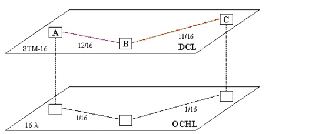
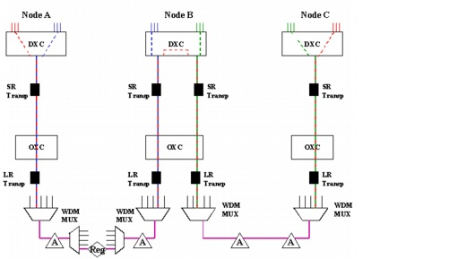

Grooming DCL to OCH Traffic > DCL Grooming Solutions Without Protection > Pure Link-by-Link (Full Intermediate Grooming)
Pure Link-by-Link (Full Intermediate Grooming)
In link-by-link grooming (also called "core grooming"), we groom the traffic together into the available OCH channels whenever possible, and add new channels if needed. The grooming algorithm terminates traffic at the DXC in every intermediate node, and regrooms the traffic to utilize existing wavelengths as fully as possible.
If we apply this solution to the same network as the previous example (see Solution 1: Pure End-to-End (No Intermediate Grooming)), SP Guru Transport Planner accommodates the three DCL demands as follows:
- Demand A-B (8 STM-1s): routed on the optical channel between nodes A and B. This demand uses 8 out of 16 timeslots on the optical channel.
- Demand B-C (7 STM-1s): routed on the optical channel between B and C. This demands uses 7 out of 16 timeslots on the optical channel.
- Demand A-C (4 STM-1s): SP Guru Transport Planner establishes no new optical channel for this demand. Instead, it uses the unused timeslots on the already-created optical channels. There are eight unused timeslots on optical channel A–B and nine unused timeslots on B–C. SP Guru Transport Planner accommodates this demand as follows:
- At node A, aggregate the A–B and A–C demands on the optical channel A–B. The network uses 12 (8 +4) timeslots on this optical channel.
- At node B, split the DCL traffic: drop the A–B demand and switch the A–C demand to the optical channel B–C. Add the B–C demand to the DXC. Now the A–C and B–C demands are aggregated on the optical channel B–C; the network uses 11 (7 + 4) timeslots on this channel.
- At node C, split and drop the DCL traffic.
Figure 8-7 Link-by-Link (No Protection): Capacity Requirements

Figure 8-8 Link-by-Link (No Protection): Associated Equipment

Note—The values in Table 8-8 are calculated with the OCH layer mode as opaque.
| Home © 1987-2007 OPNET Technologies, Inc. All Rights Reserved. This software may be covered by one or more U.S. Patents. See complete patent notice in the Legal Notices section. OPNET Support Center |